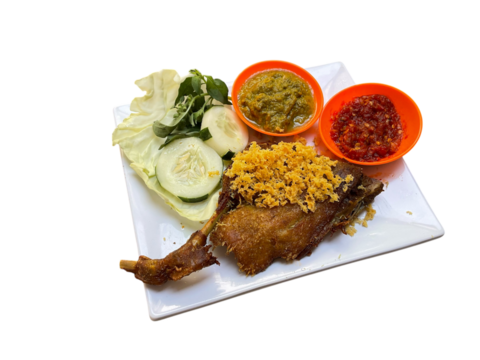
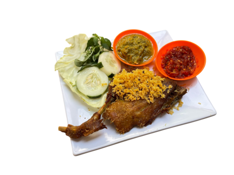

.png) 

Pengelola
ayunda
arif
asep
hendro
herman
nabila
BERITA TERBARU

BEBEK GORENG HJ SLMET DAPAT RATING BINTANG MICHELIN
Kabar gembira datang dari dunia kuliner Indonesia! Bebek Goreng H. Slamet, salah satu restoran yang terkenal dengan sajian bebek goreng lezatnya, baru saja dianugerahi Bintang Michelin, penghargaan bergengsi yang selama ini dikenal sebagai penanda kualitas kuliner terbaik di dunia.
LOMBA EDIT PALING KONYOL DAPAT SEPORSI NASI BEBEK GRATIS
Kak Mau makan bebek goreng GRATIS? Cuma butuh sedikit kreativitas dan kelucuan, kok! Bebek Goreng H. Slamet mengadakan lomba edit paling konyol dengan hadiah utama makan bebek goreng sepuasnya di seluruh cabang mereka.
YANG WAIFUNYA UBUR UBUR BAYAR 5X LIPAT,BAU AMISSS....
“Bau amis... eww!” Pasti kamu pernah merasa terganggu dengan bau amis yang muncul di dapur atau sekitar makanan, terutama saat memasak ikan atau bahan makanan laut. Bau yang menyengat ini bisa membuat siapa saja merasa tidak nyaman, dan pastinya nggak enak dilihat oleh tamu yang datang,kok malah dijadikan waifu

MENATAP DENGAN SINIS PARA PESAING.....
Bebek goreng haji slamet selalu dihati....